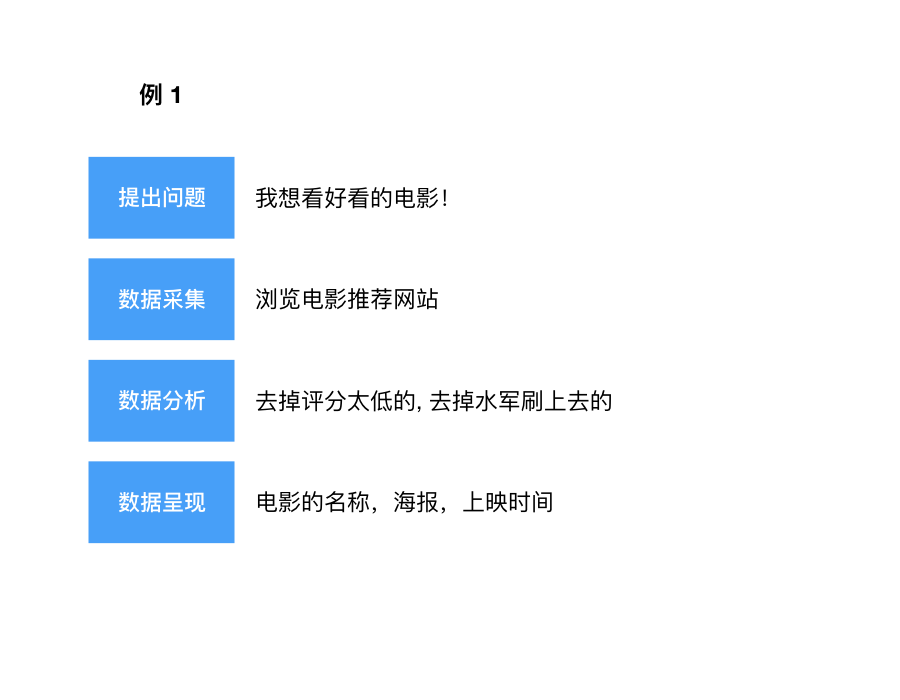

数据工程介绍
什么是数据工程？
Cooking time: 20 mins active / 25 mins passive
Tasks For Tutors： 讲师介绍数据工程概述，帮助学员了解数据工程全局观。
数据（資料），Data （Datum 的复数）经常和「信息」「資訊」可以互用。
人类每天都会生产出大量的数据，不仅人类，各种各样的检测仪器都会产生数据。数据可以是数字，文本，图片，图像等各种可以被数字化的信息。
数据工程，就是用工程的手段来处理数据。数据工程基本会涉及下面几个方面：
一个运用数据处理的例子：

上面的例子用到了一个 IT 工具：浏览器。而数据工程师处理的问题经常是这样的：
要处理这个问题，需要掌握更多更强大的工具，并对数据有更深刻的认识。
数据工程师的成长路径
初级入门：
- 有一定的英文基础
- 掌握编程技能（如 Python, R, SAS 等）
- 理解 Web 的原理，会搭建简单的 Web 服务和编写网页
- 学习统计学和回归分析（需要概率论和微积分基础）
- 学习数据存储和管理：数据库、 SQL、搜索引擎
- 掌握采集数据的手段：爬虫，日志收集，Analytics 等
锻炼编程技能，扩展知识面，加深对数据的理解：
- 学习算法，计算机网络基础
- 学习 Linux 系统管理
- 学习机器学习和数据挖掘
- 学习自然语言处理和图像模式识别
当数据来源和种类都变得越来越多，变成了大数据：
- 学习数据仓库，ETL
- 学习分布式系统，应用大数据处理框架
- 掌握深度学习，用大数据训练更复杂的神经网络
- 设计数据产品，思考从数据中可以挖掘的价值
现在有很多优秀的网络课程教授数据工程，例如 https://www.coursera.org/specializations/jhu-data-science 。任何人只要肯努力就可以掌握这项技能。
数据分析职业的分支
随着大数据的兴起，数据分析职业也越来越专业和细分，相关的职业有：
- 业务分析员 - 用技术提升业务效率和产出
- 数据分析师 - 运用数据模型解决问题
- 数据科学家 - 数据分析师的进阶，往往包括设计专用的数据分析模型
- 数据工程师 - 运用数据采集和分析工具，实现算法
- 数据架构师 - 统筹整合数据资源，架构数据平台
- 市场分析师 - 研究市场数据，帮助营销决策
- 量化分析师 - 运用数据工程进行量化交易，自动交易
- 统计专员 - 应用统计学知识分析数据，设计和制作报表
- ……
参考 https://www.mastersindatascience.org/careers/data-analyst/
一些问题
问: 我想成为数据工程师，数学不好怎么办？
答: 首先，很多分析工具不需要完整的数学知识就能使用。其次，掌握一些编程思维后，对学习数学会有不少启示和帮助。再其次，这次活动并不需要数学基础。
问: 我并不想成为数据工程师，了解这些有用吗？
答: 工程思维、编程思维对其他行业和学科也有意义。更重要的是：如今人们能获取的信息渠道都是被企业和组织牢牢掌握，信息流产品大行其道，我们获取信息的方式越来越被动。如果我们自己不掌握主动采集、分析信息的能力，那就很难获取到及时的、真实的信息。
数据工程师的一天
数据工程师的一天，by 毛苏晗：
数据工程师的一天当然是搬砖啦！
数据就是一块块砖，每一块砖都要经过无数次的搬运才能从砖场放到建筑中的合适的位置。搬砖的过程就叫ETL。当然啦，要是砖搬得不好，质量出了问题，那就要全部推倒重来啦！我们辛辛苦苦的一层一层盖好了楼，最怕的就是都快封顶了，结果人家说地基有问题，需要把楼拆了重建，那就是真是倒了血霉了。毕竟数据都是一层一层有着依赖关系，最源头的数据质量必然会传导到之后的每一层，所以只能老老实实的重新将搬砖进行到底。好不容易把楼搭好了，还要定期检查砖的质量，是不是有砖松了，有砖老化了，有砖被虫子蛀掉了（什么虫子这么强），有问题的砖就要重新补或者换掉，真是一个繁琐的工作啊！我们需要对每个表的每一行的每一个列负责，这就是数据工程师的使命。
虽然是搬砖，听上去很无聊，但是其实我们的生活还是很多彩的。每天第一件事就是打开工作流页面，就会看到里面各种的任务呈现出了五彩斑斓的颜色，一个屏幕满满的都是五彩的节点，黄色的是失败了，蓝色的是正在运行的，绿色的是成功的，黄色的是被阻塞的，红色的是被取消了，灰色的是正在排队。而且每天都会有新的工作流重新生成，每个有问题的节点都要点开查找原因，是不是很酸爽？！我们这一行，最怕的就是色盲，你说要是把失败的看成是成功的，那直接就是P1 issue了有木有！
虽然有这么多吐槽，但是不可否认的是这是一个很有难度的工作，能够将庞大复杂的数据治理好，绝对是非常有挑战非常值得自豪的一件事情。